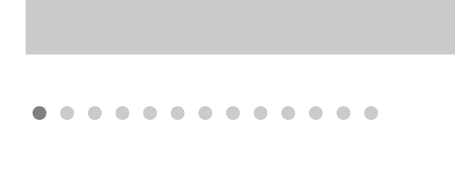
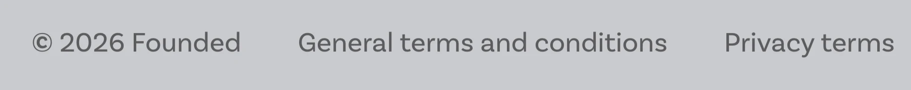
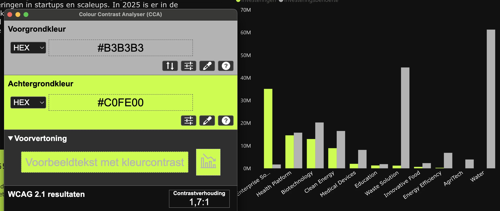
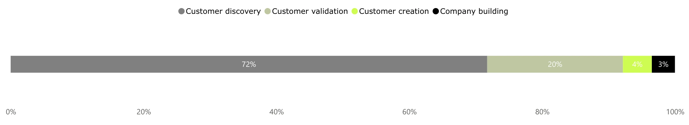
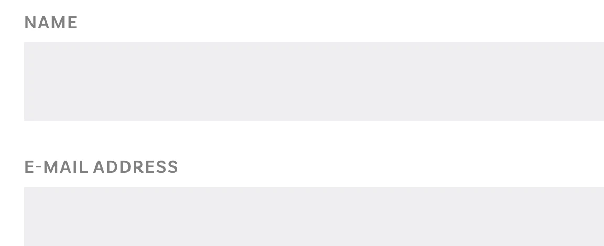
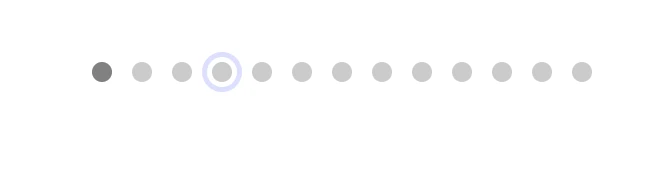

Deze quickscan is gericht op het kleurgebruik op Founded.in. Hieronder vind je de bevindingen, verspreid over meerdere pagina's.
#1 - Het actieve bolletje is alleen met kleur aangegeven

Op de pagina Startupfinanciering, vóór "Meer nieuws", gebruikt de bolletjesnavigatie kleur om het actieve bolletje aan te geven. Het contrast tussen het actieve en niet-actieve bolletje is minder dan 3,0:1.
Zie ook Events: daar is een filter waarbij het contrast tussen de gekozen en de niet-gekozen optie minder dan 3,0:1 is.
User story
Als bezoeker die kleurenblind of slechtziend is, of een hoog-contrastthema gebruikt, heb ik nodig dat het actieve bolletje in de carrousel-navigatie op meerdere manieren wordt onderscheiden — niet alleen door kleur — want nu kan ik niet zien op welke slide ik me bevind. Het enige verschil tussen het actieve bolletje en de andere bolletjes is een kleurverschil dat te subtiel is om te zien. Ik heb nodig dat het kleurverschil minimaal 3,0:1 contrast haalt, en dat het actieve bolletje ook visueel wordt onderscheiden door bijvoorbeeld een groter formaat, een gevulde versus omlijnde vorm, of een rand.
Oplossing
Zorg dat het actieve bolletje duidelijk te onderscheiden is van de andere bolletjes. Dat kan als volgt:
- Verhoog het contrast: vergroot het contrast tussen de kleur van het bolletje en de achtergrond tot minimaal 3,0:1.
- Gebruik een extra aanwijzing: verander de vorm van het actieve bolletje. Je kunt het bijvoorbeeld iets groter maken dan de andere bolletjes, of omlijnd maken in plaats van ingevuld.
#2 - Onvoldoende kleurcontrast van tekst

Onder de footer staat donkergrijze (#121212) tekst "2026 Founded", "Algemene voorwaarden" en "Privacy voorwaarden" op een lichtgrijze (#CACBCF) achtergrond. De contrastverhouding is te laag: 4,1:1.
Zie ook:
- Op de pagina's https://www.founded.in/, https://www.founded.in/voor-founders, https://www.founded.in/future-founders, en andere staat grijze (
#8D8D8D) tekst "Events" op een witte achtergrond. De contrastverhouding is te laag: 3,3:1. - Op de pagina https://www.founded.in/contact staat grijze (
#808080) tekst "naam", "E-mailadres", "telefoonnummer" en andere op een witte achtergrond. De contrastverhouding is te laag: 3,9:1. Hetzelfde probleem is te zien op de pagina https://www.founded.in/news bij de tekst "VOOR WIE" en "Regio"; op https://www.founded.in/news/startupfinanciering-noord-nederland-q1-2026 bij "delen"; op https://www.founded.in/events/hello-tomorrow-deep-tech-days bij de tekst "delen"; en andere. Zie ook andere pagina's. - Op de pagina https://www.founded.in/news/startupfinanciering-noord-nederland-q1-2026 is hetzelfde probleem te zien bij de grijze (
#808080) tekst "inhoudsopgave" op een lichtgrijze (#EEEEEE) achtergrond. De contrastverhouding is te laag: 3,4:1. Hetzelfde probleem zie je op de pagina's https://www.founded.in/events/hello-tomorrow-deep-tech-days, https://www.founded.in/events/business-lunch-talk-drenthe en https://www.founded.in/programs/bestart-mkb-boost. - Op de pagina https://www.founded.in/events staat grijze (
#A0A0A0) tekst "Vergroot je kennisniveau en … niveau", "Events voor studenten … professionals" en "Ontmoet en spreek … Founders" op een witte achtergrond. De contrastverhouding is te laag: 2,6:1. - Op de pagina https://www.founded.in/en/monitor staat grijze (
#605E5C) tekst "Investeringen" en "Investeringsbehoefte" op een zwarte (#121212) achtergrond. De contrastverhouding is te laag: 2,9:1. Hetzelfde probleem is te zien in het tabblad "1. Bedrijven". Zie ook andere kleurcombinaties op het tabblad "1. Bedrijven".
User story
Als bezoeker met een visuele beperking, leeftijdsgerelateerd contrastverlies, of een scherm in fel zonlicht, heb ik nodig dat elke tekst kleiner dan 19px minimaal 4,5:1 contrast houdt ten opzichte van de achtergrond — want de tekst is klein genoeg om de strengere contrasteis nodig te hebben, de huidige kleuren blijven daaronder, en het is juist de lopende tekst die het grootste deel van de informatie op de pagina draagt die ik niet kan lezen.
Oplossing
Omdat deze tekst kleiner is dan 19px, moet het contrast minimaal 4,5:1 zijn. Kies daarom een donkerdere tekstkleur of een lichtere achtergrondkleur zodat de contrasteis gehaald wordt.
#3 - Grafisch object heeft onvoldoende contrast

Op Monitor hebben de staven in de grafiek onvoldoende contrast ten opzichte van aangrenzende kleuren; minimaal 3:1 is vereist. Zie bijvoorbeeld de grijze (#B3B3B3) en groene (#C6FE12) kleuren in de staaf: hun contrastverhouding is 1,8:1.
Zie ook diagrammen, grafiekstaven en graphics op dezelfde pagina in "2. Sectoren" en "1. Bedrijven".
User story
Als bezoeker met een visuele beperking, leeftijdsgerelateerd contrastverlies, of een scherm in fel zonlicht, heb ik nodig dat elk informatief grafisch object op de pagina — grafiekstaven, diagramlijnen, betekenisvolle iconen, infographic-elementen — minimaal 3:1 contrast houdt ten opzichte van de omringende kleuren — want de graphic draagt informatie, en is hij te bleek om te zien, dan verdwijnt die informatie met hem mee.
Oplossing
Zorg ervoor dat de informatieve onderdelen van dit grafische element een contrastverhouding van minimaal 3:1 hebben ten opzichte van de aangrenzende kleuren.
#4 - UI-component heeft onvoldoende contrast

Op de pagina Monitor klik op "1. Bedrijven": het onderdeel van het schema heeft onvoldoende contrast ten opzichte van de aangrenzende achtergrond. Zo hebben groen (#BEC79E) en wit een contrastverhouding van 1,8:1. In deze grafiek wordt kleur gebruikt om informatie te geven.

Ook de invoervelden (#EFEFF1) op de Contact-pagina hebben onvoldoende contrast met de witte achtergrond van de pagina, momenteel 1,1:1.
User story
Als bezoeker met een visuele beperking, leeftijdsgerelateerd contrastverlies, of een scherm in fel zonlicht, heb ik nodig dat elk interactief UI-component — knoppen, invoervelden, checkboxes — visueel te onderscheiden is van zijn omgeving met minimaal 3:1 contrast — op de rand, het oppervlak, of een andere visuele grens — want als ik de rand van een bedieningselement niet kan zien, weet ik niet dat het er is, laat staan dat het iets is waarmee ik kan interacteren.
Oplossing
Zorg ervoor dat de visuele begrenzing of het oppervlak van dit element een contrastverhouding van minimaal 3:1 heeft ten opzichte van de aangrenzende achtergrond. Dit geldt ook voor alle toestanden van het element, zoals :focus en :hover.
#5 - Onvoldoende contrast icoonknop
Op pagina Voor founders hebben de dots in de navigatie vóór "Nieuws van en over Founders" onvoldoende contrast. Een contrastverhouding van 1,5:1 is te laag. Hetzelfde probleem is te zien op https://www.founded.in/future-founders.
User story
Als bezoeker met een visuele beperking, leeftijdsgerelateerd contrastverlies, of een scherm in fel zonlicht, heb ik nodig dat het icoon op elke icoon-alleen-knop minimaal 3,0:1 contrast houdt ten opzichte van de knopachtergrond — want het icoon is de enige aanwijzing wat de knop doet (er is geen tekstlabel), en een icoon dat ik niet kan zien is een knop die ik niet kan gebruiken.
Oplossing
Zorg ervoor dat het contrast van het icoon minimaal 3,0:1 is ten opzichte van de achtergrond.
#6 - Aangepaste focusindicator heeft onvoldoende kleurcontrast

Op de pagina https://www.founded.in/news/startupfinanciering-noord-nederland-q1-2026 hebben de dots in de slider navigatie boven "Meer nieuws" een aangepaste toetsenbordfocus die lichtblauw (#DDE0FF) is op een witte achtergrond. Een contrastverhouding van 1,3:1 is te laag.
User story
Als bezoeker die met het toetsenbord navigeert, slechtziend is, of een scherm in fel zonlicht gebruikt, heb ik nodig dat de aangepaste toetsenbord-focusindicator op elke pagina minimaal 3:1 contrast houdt ten opzichte van de achtergrond waarop hij staat — want als de indicator te bleek is om te zien, kan ik niet vaststellen welk element de focus heeft, en verandert toetsenbordnavigatie in het drukken op Tab en hopen dat ik ergens nuttig land.
Oplossing
Zorg dat het contrast van de aangepaste focusindicator minimaal 3,0:1 is.
#7 - Focusindicator is niet zichtbaar
Op alle pagina's, bijvoorbeeld https://www.founded.in/, is de standaard toetsenbord-focusstijl verwijderd van het interactieve element onder de kop "Meld je aan voor onze nieuwsbrieven", en is de toetsenbordfocus op dit element niet zichtbaar.
Zie ook op https://www.founded.in/news de checkboxes onder de kop "VOOR WIE" en "Regio"; op https://www.founded.in/events het filter; op https://www.founded.in/voor-founders de knoppen vóór "Nieuws van en over Founders".
De toetsenbordfocus moet altijd zichtbaar zijn op interactieve elementen zoals links, knoppen en invoervelden die met het toetsenbord focus kunnen krijgen. Bezoekers die met het toetsenbord navigeren moeten goed kunnen zien op welke plek van de pagina zij zich bevinden.
User story
Als bezoeker die met het toetsenbord navigeert, een schermvergroter gebruikt, of slechtziend is, heb ik nodig dat op elk interactief element een zichtbare focusindicator verschijnt zodra het element focus krijgt — want zonder die indicator weet ik niet welk element actief is, en kan ik niet volgen waar ik op de pagina ben tijdens het tabben.
Oplossing
Zorg ervoor dat de toetsenbordfocus zichtbaar is op alle interactieve elementen. Op deze pagina staat een instructie om focuszichtbaarheid te testen: https://www.properaccess.nl/blog/hoe-test-ik-focus-zichtbaarheid/.